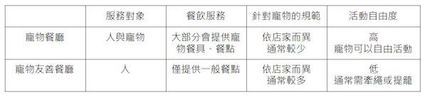

寵物餐廳 V.S. 寵物友善餐廳
隨著養寵物的人口增加，台灣能接受毛孩的餐廳越來越多，而這樣的餐廳主要分為「寵物餐廳」及「寵物友善餐廳」兩類，看似名稱相近卻有著不同的規範與服務。以下將為您介紹二者之的區別與注意事項。
寵物餐廳 與 寵物友善餐廳 比較表
什麼是寵物餐廳？
什麼是寵物友善餐廳？
身為飼主應有的觀念及該遵守的公約：
- 為確保每位來賓與毛孩子的們的安全，勁量避免毛小孩在用餐環境任意走動。
- 為確保用餐品質，公小孩請務必穿上禮貌帶、母小孩請穿上尿布，以防止到處做記號；母小孩若為發情期，請務必穿上生理褲。
- 為確保其他客人用餐品質，請隨時留意毛小孩，若有大小便隨時和店員反應。
- 毛小孩若有失控行為或亂叫之行為，請主人盡可能安撫，若無改善，店內有權利及義務請主人暫時將毛孩子帶離現場環境。
- 毛小孩應定期施打預防針及做好體內外驅蟲，若有傳染疾病(如皮膚病或跳蚤壁蝨等)請勿入館，以免交叉感染。
- 飼主需注意寵物的健康狀況，如對某項成分過敏，請勿點用。
- 飼主離開跑飯店時，需發揮公德心，不要讓自己的毛孩在附近店家大小便，大家共同維護人形街道潔淨。
- 部分餐廳要求飼主備有提籠、推車、牽繩、口罩等，請務必配合。
- 毛孩不上桌，不使用人用餐具或器皿，若店家沒有提供，飼主需自備。
- 基於衛生考量，請勿在餐廳內整理寵物毛髮，如梳毛、剪毛等。
- 遵守不同餐廳所訂定的寵物規範。
了解寵物餐廳與寵物友善餐廳的差別與注意事項後，飼主可依需求選擇前往不同類型的餐廳。